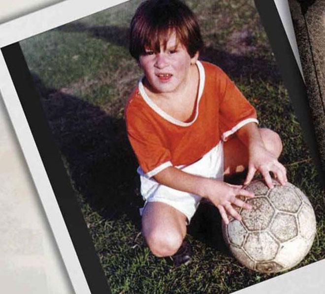
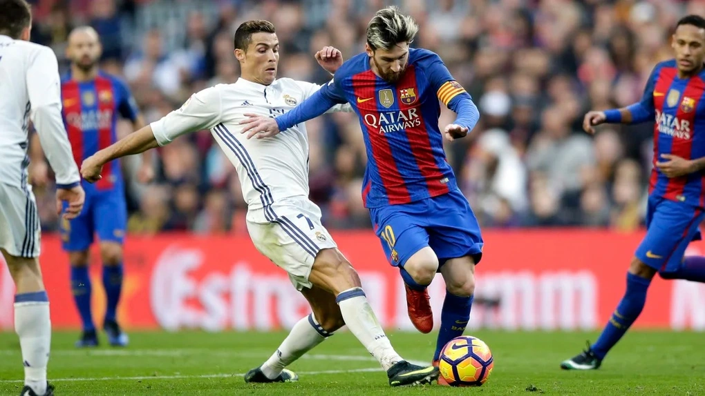
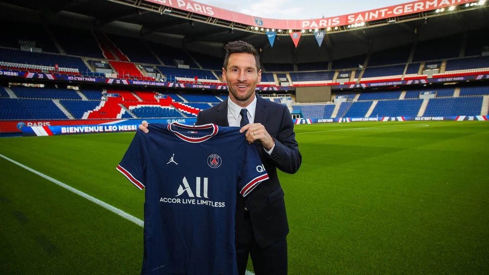
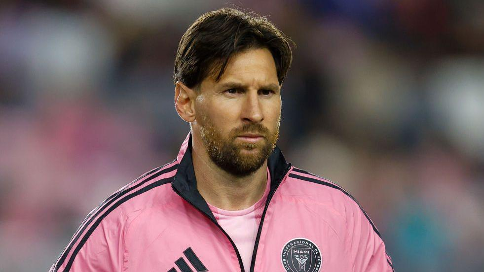

Lionel Messi's trophy
- World cup (1)
- Champion League (3)
- FIFA Club Worldcup (3)
- Laliga (10)
- Cúp nhà vua (7)
- Siêu cúp tây ban nha (8)
- Ligue 1 (2)
- Siêu cúp Pháp (1)
Tiểu sử
Lionel Messi was born on June 24, 1987, in Rosario, Argentina. He began playing football at a young age and joined FC Barcelona at 13
Sự nghiệp
Messi thi đấu cho Barcelona từ năm 2004 đến năm 2021. Anh gắn bó với câu lạc bộ 17 năm, có cho mình 672 bàn thắng và 303 kiến tạo cho FC Barcelona.
Messi
 Learn More
Visit Wikipedia for more information.